본 포스트는 Youngwoon Lee 교수님의 Deep Reinforcement Learning 강의 자료 중 Lecture 05-2 — RL Benchmarks (총 13장)을 바탕으로, 강의를 처음 듣는 독자도 논리적 흐름을 따라갈 수 있도록 재구성한 것입니다. 원본 슬라이드는 영문으로 작성되어 있으며, 본문의 대섹션은 슬라이드 제목을 그대로 차용했습니다. 같은 제목이 이어지는 두 장(HumanoidBench 12–13쪽)은 하나의 절로 묶었고, 제목 없이 SIMPLER 논문의 대표 이미지만 실린 9쪽은 그 벤치마크 이름을 절 제목으로 삼았습니다. 7–13쪽의 벤치마크 슬라이드마다 달린 원 논문의 서지 정보는 해당 절의 도입부에 옮겨 두었습니다. 본문의 대섹션 번호는 원본 슬라이드에 없는 것을 읽기 편하도록 붙인 것입니다.
한 줄 요약 (TL;DR)
“강화학습 알고리즘의 우열은 ’결국 얼마나 잘하게 되는가(점근 성능)’와 ’얼마나 적은 데이터로 잘하게 되는가(표본 효율)’라는 두 잣대로 가려지고, 벤치마크는 그 잣대를 모두가 같은 조건에서 대도록 고정해 둔 시험장입니다.”
지금까지의 회차는 정책 경사, 행위자–비평가, PPO, DQN처럼 알고리즘을 만드는 이야기였습니다. 이번 데크는 한 걸음 물러나 그 알고리즘들을 어떻게 비교하는가를 묻습니다. 학습 곡선의 끝 높이와 초반 기울기라는 두 잣대는 곡선이 교차하는 순간 서로 다른 답을 내므로, 표준 벤치마크는 학습 예산을 설정 이름에 박아 어느 잣대를 재는지 정해 둡니다 — 연속 제어의 DMC·gym(100K·1M)과 이산 제어의 아타리(Atari100K·Atari200M)가 그 예입니다. 그 뒤로 벤치마크의 무게중심은 로봇 조작과 VLA로 옮겨 가며, 과제의 다양성·길이·복잡도에 더해 평가 자체를 어떻게 싸고 재현 가능하게 만들 것인가가 새 문제로 떠오릅니다. 그 답으로 LIBERO와 RoboTwin 2.0은 절차적 생성과 도메인 무작위화로 과제를 대량으로 만들고, SIMPLER는 실세계용 정책을 시뮬레이션에서 평가하며, RoboArena는 전 세계 평가자들의 쌍대 비교를 모아 순위를 매기고, FurnitureBench는 실세계 환경 자체를 재현 가능하게 표준화하며, HumanoidBench는 휴머노이드라는 가장 복잡한 몸을 시험대에 올립니다.
1. 강화학습 알고리즘은 어떻게 비교하는가 (How Do We Compare RL Algorithms?)
지금까지의 회차는 새로운 알고리즘을 하나씩 쌓아 왔습니다. 그런데 새 알고리즘이 나올 때마다 “그래서 이전 것보다 나은가?”라는 질문이 따라붙습니다. 지도학습이라면 고정된 시험 데이터에서의 정확도 하나로 답할 수 있지만, 강화학습에는 그런 숫자가 없습니다. 학습 데이터를 에이전트 자신이 모으고, 그 데이터가 학습이 진행될수록 바뀌기 때문입니다. 그래서 강화학습의 비교는 숫자 하나가 아니라 곡선에서 시작합니다.
1.1 비교의 기본 단위: 학습 곡선
슬라이드의 두 도식은 같은 축을 공유합니다.
- 가로축 — 학습 스텝(training steps): 알고리즘이 환경과 상호작용하며 학습을 진행한 양입니다.
- 세로축 — 평가 반환값(eval return): 학습 도중 일정 간격마다 그 시점의 정책을 따로 실행해 얻은 반환값의 평균입니다.
평가를 따로 하는 이유는 학습용 롤아웃에 탐색을 위한 무작위성(6회차의 엡실론 탐욕 같은)이 섞여 있어, 그 반환값이 정책의 실력을 그대로 보여 주지 않기 때문입니다. 학습 스텝 \(t\)에서의 정책을 \(\pi_{\theta_t}\)라 하고, 이 정책으로 \(M\)개의 평가 에피소드를 실행해 \(m\)번째 에피소드에서 보상 \(r_1^{(m)}, \ldots, r_{T_m}^{(m)}\)을 받았다면 학습 곡선은
\[ \bar{R}(t) = \frac{1}{M} \sum_{m=1}^{M} \sum_{k=1}^{T_m} r_k^{(m)} \]
입니다. 이하에서는 이 함수 \(\bar{R}(t)\) 하나로 두 잣대를 정의해 보겠습니다.
1.2 점근 성능 (Asymptotic Performance)
슬라이드의 정의는 “더 높은 최종 성능에 도달하는가”입니다. 학습을 한없이 계속했을 때 곡선이 수렴하는 높이이므로 식으로는
\[ \bar{R}(\infty) = \lim_{t \to \infty} \bar{R}(t) \]
이지만, 실제로는 무한히 학습할 수 없으므로 정해진 예산 \(T\)의 끝에서 잰 \(\bar{R}(T)\)로 근사합니다. 예산이 충분히 커서 곡선이 평평해졌다면 두 값은 거의 같습니다.
슬라이드 위쪽 도식에서 두 초록 곡선은 모두 오른쪽 끝에서 주황 곡선보다 위에 있으므로, 초록이 주황보다 점근 성능이 좋습니다. 그런데 두 초록 중 아래쪽 곡선을 따라가 보면, 학습의 상당 부분 동안 주황보다 아래에 있다가 뒤늦게 교차해 올라섭니다. 점근 성능은 오직 끝만 보는 잣대라서, 이런 늦깎이 알고리즘도 이 잣대로는 승자입니다.
1.3 표본 효율 (Sample Efficiency)
슬라이드의 정의는 “더 적은 학습 데이터로 더 좋거나 비슷한 결과를 내는가”입니다. 이를 식으로 적는 방법은 두 가지이며, 같은 것을 다른 쪽에서 본 것입니다.
목표 성능까지 걸리는 스텝: 목표 수준 \(\tau\)에 처음 도달하는 스텝
\[ t^\star(\tau) = \min\{\, t : \bar{R}(t) \ge \tau \,\} \]
이 작을수록 표본 효율적입니다.
작은 예산에서의 성능: 작은 예산 \(t_0\)에서 잰 \(\bar{R}(t_0)\)가 클수록 표본 효율적입니다.
슬라이드 아래쪽 도식에서 두 초록 곡선은 모두 학습 초반에 주황보다 훨씬 가파르게 올라가므로, 초록이 주황보다 표본 효율적입니다. 여기서도 한 초록 곡선을 눈여겨볼 만합니다. 가장 빨리 치고 올라갔다가 일찍 평평해지는 이 곡선은 오른쪽 끝에서 주황과 거의 같은 높이, 정확히는 근소하게 아래에 머뭅니다. 정의의 “더 좋거나 비슷한 결과”라는 표현이 바로 이런 곡선을 위한 것입니다 — 최종 성능이 비슷하더라도 거기에 훨씬 적은 데이터로 도달했다면 표본 효율에서는 이긴 것입니다.
표본 효율이 따로 중요한 이유는 환경과의 상호작용이 공짜가 아니기 때문입니다. 시뮬레이터에서는 시간과 연산이, 실제 로봇에서는 시간·장비 마모·안전이 그 비용입니다. 5회차의 PPO가 모은 데이터를 몇 번의 갱신 뒤에 버리는 온폴리시 방법이고 6회차의 Q-학습이 재생 버퍼로 과거 데이터를 다시 쓰는 오프폴리시 방법이라는 대비가 가장 뚜렷하게 드러나는 곳도 바로 이 잣대입니다.
1.4 두 잣대는 서로 다른 답을 낼 수 있다
두 도식을 나란히 놓은 이유가 여기에 있습니다. 두 알고리즘 \(A\), \(B\)의 곡선이 스텝 \(t_c\)에서 한 번 교차한다고 합시다.
\[ \bar{R}_A(t_c) = \bar{R}_B(t_c), \qquad \bar{R}_A(t) < \bar{R}_B(t) \;\; (t < t_c), \qquad \bar{R}_A(t) > \bar{R}_B(t) \;\; (t > t_c) \]
그러면 \(t_c\)보다 작은 예산에서 비교하면 \(B\)가, 큰 예산에서 비교하면 \(A\)가 이깁니다. 위쪽 도식의 늦깎이 초록 곡선(\(A\))과 주황 곡선(\(B\))이 정확히 이 관계이고, 아래쪽 도식에서는 주황 곡선이 \(A\), 일찍 평평해지는 초록 곡선이 \(B\)인 같은 관계가 나타납니다. 즉 “어느 알고리즘이 더 나은가”는 “어느 예산에서 비교하는가”를 정하기 전에는 답할 수 없는 질문입니다.
곡선이 교차하는 한 우열은 예산에 따라 뒤바뀌므로, 공정한 비교를 위해서는 예산을 미리 고정해야 합니다. 이어지는 3·4절의 표준 벤치마크들이 설정 이름에 숫자를 달고 다니는 이유가 이것입니다 — DMC의 “@100K / @1M”, 아타리의 “Atari100K / Atari200M”. 작은 예산은 표본 효율을, 큰 예산은 점근 성능을 재는 설정이며, 아타리 슬라이드는 이 대응을 명시적으로 적어 둡니다.
6회차 28절의 Rainbow 학습 곡선이 두 잣대를 한 그림에 담은 실제 예입니다. 가로축(학습 프레임 수)은 2억(200M)에서 끝나는데, Rainbow는 DQN이 2억 프레임에 걸쳐 도달한 성능에 약 700만 프레임 만에 도달했고(표본 효율), 학습이 끝날 때에는 비교한 모든 방법보다 위에 있었습니다(점근 성능). 1절의 언어로 다시 읽으면, 두 잣대 모두에서 이긴 경우입니다.
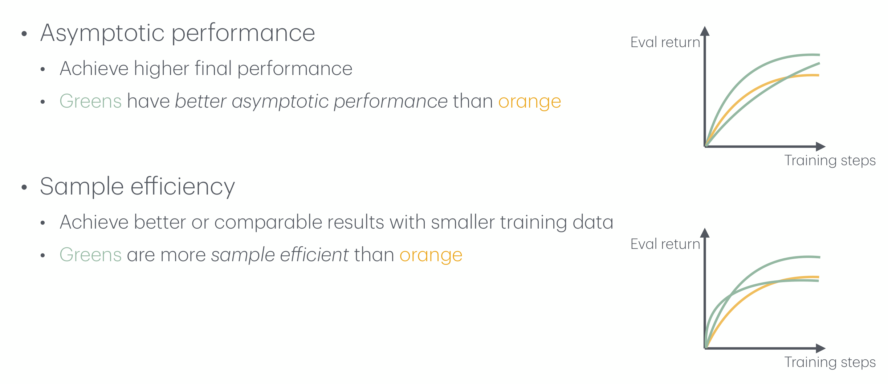
2. 널리 쓰이는 강화학습 벤치마크 (Popular RL Benchmarks)
잣대를 정했으니 이제 어디서 잴 것인가를 정할 차례입니다. 슬라이드는 널리 쓰이는 벤치마크를 두 단계로 분류합니다. 먼저 행동 공간의 종류로 크게 가르고, 그다음 주황색 주석으로 각 벤치마크가 무엇을 시험하는지 덧붙입니다.
2.1 첫 번째 기준: 행동 공간
행동 공간으로 먼저 가르는 것은 알고리즘마다 다룰 수 있는 행동 공간이 다르기 때문입니다.
- 이산 행동 \(\mathcal{A} = \{1, \ldots, |\mathcal{A}|\}\): DQN 계열은 매 스텝 \(\arg\max_{\mathbf{a}} Q(\mathbf{s}, \mathbf{a})\)를 계산해야 하므로, 모든 행동을 하나씩 대입해 볼 수 있는 이산 행동 공간에서만 곧바로 쓸 수 있습니다. 6회차에서 Q-학습의 단점으로 꼽은 “연속 행동 공간 불가”가 이것입니다.
- 연속 행동 \(\mathcal{A} \subseteq \mathbb{R}^{d}\): 관절에 가할 힘처럼 실숫값 벡터로 행동하는 로봇 제어가 대표적이며, 6회차 29절에서 예고한 DDPG·TD3·SAC가 이 공간을 위한 방법입니다.
- 둘 다: PPO는 정책을 직접 매개화하므로, 1회차에서 본 범주형 정책과 가우시안 정책 중 하나를 골라 어느 쪽에도 쓸 수 있습니다. 그래서 3절(연속)과 4절(이산)의 슬라이드에 모두 PPO가 등장합니다.
2.2 두 번째 기준: 무엇을 시험하는가
| 행동 공간 | 벤치마크 | 슬라이드의 주석 | 본문 |
|---|---|---|---|
| 연속 제어 | DMC (DeepMind Control Suite), OpenAI gym | 굵은 글씨 (표준 벤치마크) | 3절 |
| 연속 제어 | BSuite | — | — |
| 연속 제어 | robosuite, rlbench, meta-world, Libero | 단순하지만 다양한 로봇 과제 (simple but diverse robotic tasks) | 5·6절 |
| 연속 제어 | FrankaKitchen, FurnitureBench | 장기 로봇 과제 (long-horizon robotic tasks) | 10절 |
| 연속 제어 | HumanoidBench | 복잡한 로봇 시스템 (complex robotic system) | 11절 |
| 이산 제어 | Atari | 굵은 글씨 (표준 벤치마크) | 4절 |
| 이산 제어 | MiniGrid | — | — |
| 이산 제어 | Procgen | 보지 못한 게임으로의 일반화 (generalization to unseen games) | — |
| 이산 제어 | Crafter | 보상이 희소한 장기 과제 (long-horizon task with sparse rewards) | — |
| 이산 제어 | Minecraft | 열린 결말의 체화 에이전트 학습 (open-ended embodied agent learning) | — |
주석이 가리키는 시험 항목을 풀어 보면 다음과 같습니다.
- 다양성: 과제 하나하나는 단순해도 종류가 많으면, 특정 과제에 맞춘 요령이 아니라 여러 과제에 두루 통하는 능력을 재게 됩니다.
- 장기성(long-horizon): 성공까지 수많은 단계를 순서대로 거쳐야 하는 과제입니다. 단계가 길어질수록 오차가 쌓이고, 마지막 보상이 어느 행동 덕분인지 가려내는 신용 할당이 어려워집니다.
- 희소 보상(sparse reward): 보상이 드물게 주어지면 무작위 탐색으로는 보상을 한 번도 보지 못할 수 있습니다. 6회차에서 DQN이 \(0\%\)에 그친 Montezuma’s Revenge가 이 계열의 어려움이었습니다. Crafter는 이 어려움을 장기성과 함께 시험하는, 마인크래프트를 단순화한 2차원 생존 게임입니다.
- 복잡한 시스템: 관절이 많은 몸일수록 행동 공간의 차원이 커지고, 균형과 조작을 동시에 신경 써야 합니다.
- 일반화: Procgen은 이름 그대로 게임 판을 절차적으로 생성(procedural generation)하므로, 훈련 때 보지 못한 판에서의 성능으로 일반화를 잴 수 있습니다.
- 열린 결말(open-ended): Minecraft처럼 정해진 하나의 목표나 끝이 없는 세계에서 몸을 가진(embodied) 에이전트를 학습시키는 문제입니다.
주석이 없는 두 벤치마크도 짧게 짚어 두면, BSuite는 탐색·기억·신용 할당 같은 강화학습의 핵심 능력을 하나씩 따로 진단하도록 설계된 작은 실험 모음이고, MiniGrid는 격자 세계에서 열쇠·문·물체를 다루는 가볍고 빠른 환경 모음입니다. 더 많은 환경은 슬라이드가 링크한 목록 awesome-rl-envs에 정리되어 있습니다.
목록에서 굵게 강조된 것은 DMC, OpenAI gym, Atari 셋뿐이며, 이어지는 두 슬라이드가 바로 이 셋을 “Standard benchmark”라고 부르며 자세히 다룹니다. 표준 벤치마크의 역할은 새 알고리즘이 나올 때마다 모두가 같은 자로 잴 수 있게 하는 것이고, 주황색 주석이 달린 나머지는 표준 벤치마크가 잘 드러내지 못하는 특정 능력을 겨냥한 시험장입니다.
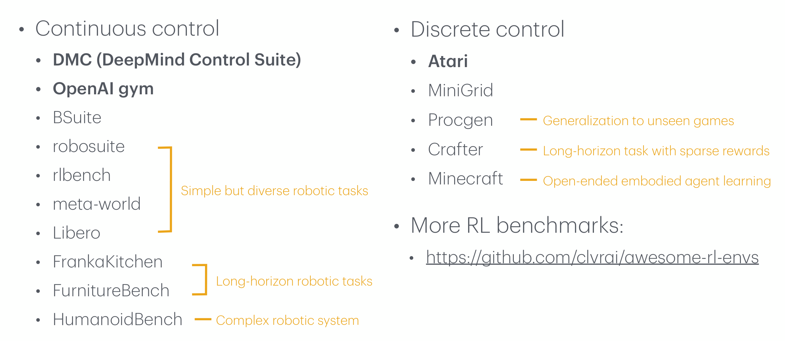
3. OpenAI gym과 DeepMind Control Suite (OpenAI Gym, DeepMind Control Suite)
연속 행동 공간의 표준 벤치마크입니다. 두 이름이 한 슬라이드에 묶인 것은 둘 다 같은 물리 엔진 위에서 비슷한 성격의 과제를 제공하기 때문입니다.
3.1 MuJoCo 위의 약 20개 과제
- 규모: 연속 행동 공간을 위한 약 20개 과제로 이루어진 표준 벤치마크입니다.
- 물리 엔진: 모두 MuJoCo(Multi-Joint dynamics with Contact)로 시뮬레이션됩니다. 이름대로 여러 관절로 이어진 몸의 동역학과 접촉을 계산하는 물리 엔진이며, 2회차에서 MDP의 예로 든 Ant도 MuJoCo 환경이었습니다.
- 라이브러리의 계보:
gym[mujoco]→gymnasium[mujoco]또는dm_control. 대괄호는 파이썬 패키지를 설치할 때 MuJoCo 관련 의존성을 함께 설치하는 선택 항목(extra) 표기이고, 화살표는 OpenAI gym의 역할을 후속 라이브러리 gymnasium이 이어받았다는 뜻입니다. DeepMind Control Suite 쪽은dm_control로 씁니다.
행동은 각 관절에 가할 힘 같은 실숫값 벡터 \(\mathbf{a} \in \mathbb{R}^{d}\)이며, 과제마다 관절 수에 따라 \(d\)가 다릅니다.
3.2 두 가지 설정 (2 Different Settings)
DMC는 무엇을 관측하느냐에 따라 두 설정으로 나뉩니다.
| 설정 | 관측 | 예산 |
|---|---|---|
| DMC proprioception | 상태 관측: 관절 각도·속도 등 로봇 자신의 몸 상태를 담은 저차원 벡터 | 100K 또는 1M |
| DMC vision | 픽셀 관측: \(84 \times 84 \times 3\) RGB 이미지 | 1M |
- 고유수용감각(proprioception): 눈을 감고도 자기 팔다리의 위치를 아는 감각을 가리키는 말로, 1회차에서 로봇의 관측을 이루는 요소로 등장했습니다. 여기서는 시뮬레이터가 알려 주는 관절 상태를 그대로 관측으로 받는 설정입니다. 관측이 곧 제어에 필요한 정보이므로, 알고리즘은 제어 자체만 배우면 됩니다.
- 픽셀 관측: 관측이 \(o \in \{0, \ldots, 255\}^{84 \times 84 \times 3}\), 즉 \(84 \times 84 \times 3 = 21{,}168\)개의 숫자입니다. 알고리즘은 이 숫자들에서 관절 상태에 해당하는 정보를 스스로 뽑아내는 표현 학습과 제어를 동시에 해내야 합니다.
- 예산: “@” 뒤의 숫자가 1절의 학습 예산입니다. 상태 관측에는 100K와 그 열 배인 1M 두 예산이 있고, 픽셀 관측에는 1M만 있습니다. 아타리 슬라이드가 명시하는 것과 같은 논리로 읽으면, 작은 예산은 표본 효율을, 큰 예산은 점근 성능에 가까운 쪽을 재는 설정입니다.
차원이 커지는 것만이 문제가 아닙니다. 정지한 이미지 한 장에는 속도가 담기지 않으므로, 픽셀 관측 하나만으로는 마르코프 상태가 되지 못합니다. 6회차 14절에서 아타리에 프레임 스택을 쓴 이유가 같은 문제였습니다. 상태 관측에서는 속도가 벡터에 이미 들어 있으니 이 문제가 없고, 이 차이가 두 설정의 난이도를 가릅니다.
3.3 주로 쓰이는 알고리즘
슬라이드는 이 벤치마크가 주로 PPO, SAC, DDPG, TD3, DreamerV3의 평가에 쓰인다고 적습니다. PPO는 5회차에서 다룬 온폴리시 방법이고, SAC·DDPG·TD3는 6회차 29절에서 예고한 연속 행동 공간용 오프폴리시 방법이며, DreamerV3는 환경의 세계 모형(world model)을 학습해 그 안에서 정책을 학습하는 모형 기반(model-based) 방법입니다. 성격이 다른 계열이 한 벤치마크 위에 모인다는 것 자체가 표준 벤치마크의 역할을 보여 줍니다.
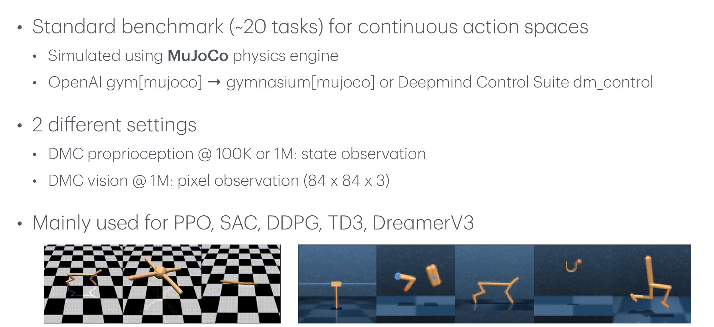
4. 아타리 (Atari)
이산 행동 공간의 표준 벤치마크입니다. 6회차에서 DQN과 Rainbow의 성적표를 읽을 때 이미 이 벤치마크 위에 서 있었으므로, 여기서는 그 성적표가 어떤 조건에서 매겨졌는지를 정리합니다.
4.1 55개 게임과 약 18개 행동
- 규모: 55개 과제(게임)로 이루어진 이산 행동 공간의 표준 벤치마크이며, 행동은 약 18개입니다.
- 라이브러리의 계보:
gym[atari]→gymnasium[atari]. 3절과 같은 계승 관계입니다.
아타리 2600의 조작기는 8방향 조이스틱과 버튼 하나입니다. 가능한 입력을 모두 세면
\[ \underbrace{1}_{\text{무동작}} + \underbrace{1}_{\text{버튼}} + \underbrace{8}_{\text{8방향}} + \underbrace{8}_{\text{8방향 + 버튼}} = 18 \]
이므로 행동 공간의 크기는 최대 \(|\mathcal{A}| = 18\)입니다. 게임에 따라서는 이 중 일부만 의미가 있어, 게임별로 더 작은 행동 집합을 쓰기도 합니다.
4.2 세 가지 설정 (3 Different Settings)
| 설정 | 관측 | 예산 | 재는 것 |
|---|---|---|---|
| RAM | 게임기 메모리 128바이트 | — | — |
| Atari200M | RGB 이미지 \(210 \times 160 \times 3 \to 84 \times 84 \times 3\) | 200M | 점근 성능 |
| Atari100K | 위와 같은 이미지 관측 | 100K | 표본 효율 |
- RAM 관측: 아타리 2600의 메모리 128바이트를 그대로 관측 벡터로 받습니다. 게임 진행에 필요한 변수들이 이 작은 메모리에 담기므로, 3절의 상태 관측에 대응하는 설정입니다.
- 이미지 관측: 원본 화면은 \(210 \times 160 \times 3 = 100{,}800\)개의 숫자인데, 크기 조정과 잘라내기를 거쳐 \(84 \times 84 \times 3 = 21{,}168\)개, 약 5분의 1로 줄입니다. 3절 DMC vision의 관측과 같은 크기입니다.
- 예산으로 가르는 두 잣대: 이미지 관측은 다시 예산으로 나뉘며, 슬라이드는 그 의미를 명시합니다 — Atari200M은 점근 성능을, Atari100K는 표본 효율을 시험합니다. 1절의 두 잣대가 벤치마크 설정의 이름으로 굳어진 셈입니다. 6회차 28절의 Rainbow 그래프가 2억 프레임에서 끝나는 것도 이 200M과 같은 예산입니다.
4.3 주로 쓰이는 알고리즘
슬라이드는 DQN, Rainbow, PPO를 꼽고 말줄임표로 목록을 열어 둡니다. DQN과 Rainbow는 6회차, PPO는 5회차의 주제였습니다. 이산 행동 공간이므로 DQN 계열의 \(\arg\max\)가 문제없이 계산되고, PPO는 3절에 이어 여기에도 등장합니다.
같은 “아타리”라도 쓰는 게임의 수가 논문마다 다릅니다. 이 슬라이드는 55개를 표준으로 적지만, 6회차에서 본 DQN은 49개, Rainbow는 57개 게임에서 평가되었습니다. 여기에 관측(RAM인가 이미지인가)과 예산(100K인가 200M인가)까지 다르면 숫자를 나란히 놓는 것 자체가 의미를 잃습니다. 성적표를 비교하기 전에 게임 집합·관측·예산이 같은지부터 확인해야 합니다.
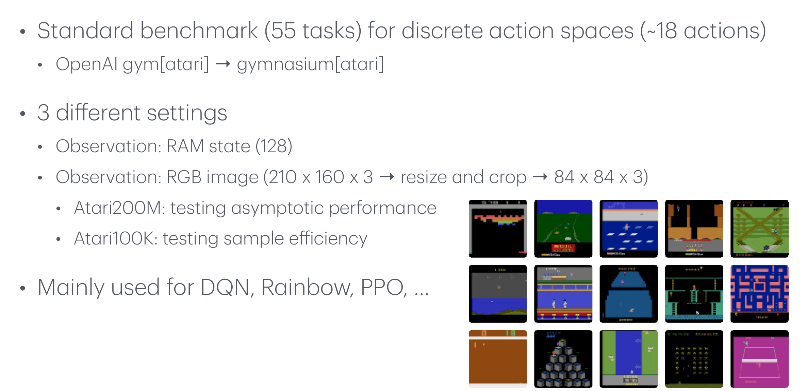
5. 더 많은 벤치마크 (Many More Benchmarks)
3·4절의 표준 벤치마크가 알고리즘을 재는 공통의 자라면, 이 슬라이드의 벤치마크들은 로봇 조작(manipulation)으로 무대를 옮깁니다. 3절의 과제가 막대와 관절로 이루어진 단순한 몸을 제어하는 것이었다면, 여기서는 로봇 팔이나 손이 물체를 다루는 과제가 중심입니다. 여섯 벤치마크를 그림에서 보이는 것과 다양성을 늘리는 방향으로 정리하면 다음과 같습니다.
| 벤치마크 | 그림에서 보이는 것 | 다양성을 늘리는 방향 |
|---|---|---|
| OpenAI gym Robotics | 한 팔 로봇이 탁자 위 물체를 다루는 과제 4개, 로봇 손이 손안에서 물체를 다루는 과제 4개 | 팔 조작과 손재주 조작(dexterous manipulation) |
| DoorGym | 색과 손잡이 모양이 제각각인 문 9개 | 같은 과제(문 열기)의 외형 변이 |
| RLBench | 같은 로봇 팔이 가정용 물체를 다루는 여러 과제(그림에는 24개) | 과제의 종류 |
| dm_control | 파란 격자 바닥 위에서 로봇 팔이 블록을 다루는 장면 3개 | 3절 DMC의 조작 과제 |
| Meta-World | 같은 로봇 팔의 과제 50개를 훈련 45개 · 시험 5개로 분할 | 보지 못한 과제로의 일반화 |
| robosuite | 여러 종류의 로봇 팔이 탁자 과제들을 수행 | 로봇 몸체의 종류 |
Meta-World의 분할은 특히 눈여겨볼 만합니다. 1절의 두 잣대는 같은 과제에서 학습 곡선을 비교했지만, Meta-World는 45개 과제로 학습시킨 뒤 한 번도 본 적 없는 5개 과제(open box, close box, lock door, unlock door, pick bin)에서 얼마나 잘하는지를 봅니다. 질문이 “얼마나 잘 배우는가”에서 “배운 것을 얼마나 옮겨 가는가”로 바뀌는 것이며, 이는 다음 절의 LIBERO가 정면으로 다루는 주제입니다.
2절의 주석 “단순하지만 다양한 로봇 과제”가 가리키는 다양성은 한 가지가 아닙니다. 이 슬라이드의 벤치마크들은 서로 다른 축으로 다양성을 늘립니다.
- 과제의 수 (RLBench, Meta-World): 무엇을 하는가를 바꿉니다.
- 외형의 변이 (DoorGym): 같은 일을 다른 겉모습 속에서 하게 합니다.
- 몸체의 종류 (robosuite): 같은 일을 다른 로봇으로 하게 합니다.
뒤에 나오는 RoboTwin 2.0(7절)은 이 세 방향을 한꺼번에 밀어붙인 사례로 읽을 수 있습니다 — 50개 과제, 도메인 무작위화, 5종 로봇.
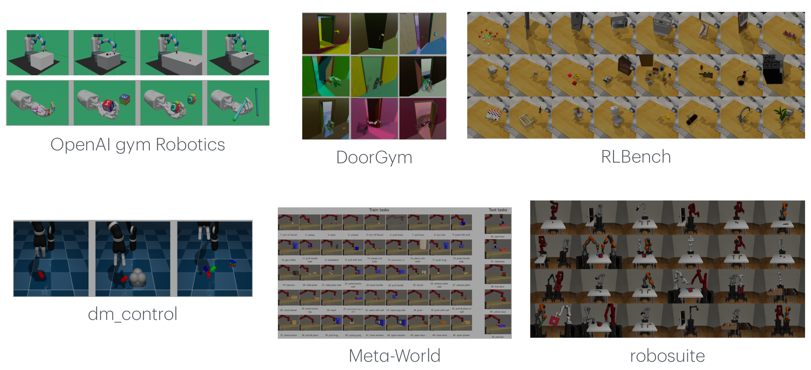
6. VLA를 위한 최근 벤치마크 (Recent Benchmarks for VLAs)
6.1 VLA와 벤치마크의 새 요구
VLA(Vision-Language-Action) 모형은 카메라 영상(vision)과 자연어 지시(language)를 입력받아 로봇의 행동(action)을 출력하는 모형입니다. 9절의 그림에 나오는 “Close the drawer”, “Put the ketchup in the bowl” 같은 지시 하나로 여러 과제를 수행하는 범용 정책(generalist policy)을 목표로 합니다.
이런 모형을 평가하려면 3·4절처럼 과제 하나에서 학습 곡선을 그리는 것만으로는 부족합니다. 여러 과제를 언어로 지정할 수 있어야 하고, 무엇이 바뀌었을 때 성능이 무너지는지를 가려낼 수 있어야 합니다. 슬라이드가 그 첫 예로 든 것이 LIBERO입니다(Liu et al., LIBERO: Benchmarking Knowledge Transfer for Lifelong Robot Learning, NeurIPS 2023 Datasets and Benchmarks). 제목대로 원래는 평생 학습(lifelong learning) — 과제를 하나씩 차례로 배워 나가는 학습 — 에서의 지식 전이를 재려고 만든 벤치마크이며, 슬라이드는 이를 VLA를 위한 최근 벤치마크로 소개합니다.
6.2 네 과제 묶음과 두 종류의 지식
위쪽 가운데의 절차적 생성(procedural generation)에서 네 과제 묶음이 나옵니다. 과제를 사람이 하나하나 설계하는 대신 생성 절차로 만들어 내므로, 무엇을 고정하고 무엇을 바꿀지를 체계적으로 조절할 수 있습니다.
| 과제 묶음 | 그림 속 설명 문구 | 요구하는 지식 |
|---|---|---|
| LIBERO-Object | Different layouts, same objects | 선언적 |
| LIBERO-Spatial | Different objects, same layout | 선언적 |
| LIBERO-Goal | Different goals, same objects & layout | 절차적 |
| LIBERO-100 | Diverse objects, layouts, backgrounds | 선언적 + 절차적 |
- 선언적 지식(declarative knowledge): “무엇이 무엇인가”, “어디에 있는가”처럼 사실에 관한 지식입니다. 어떤 물체가 케첩인지, 어느 그릇이 접시 옆에 있는지를 아는 것이 여기에 속합니다. 그림에서는 정육면체 아이콘으로 표시됩니다.
- 절차적 지식(procedural knowledge): “어떻게 하는가”에 관한 지식, 즉 행동의 순서와 방법입니다. 같은 물건들을 앞에 두고도 목표에 따라 서랍을 열 수도, 그릇을 옮길 수도 있어야 합니다. 그림에서는 반쯤 검은 사면체 아이콘으로 표시됩니다.
이 설계의 요점은 한 번에 한 요인만 바꾼다는 데 있습니다. LIBERO-Goal은 물체와 배치를 모두 고정하고 목표만 바꾸므로, 여기서 성능이 무너진다면 원인은 절차적 지식의 전이일 수밖에 없습니다. 반대로 LIBERO-100은 물체·배치·배경을 모두 바꾸므로 두 종류의 지식이 얽힌 현실적인 상황을 봅니다. 통제 실험처럼 과제 묶음을 짜 두었기 때문에, 로봇이 어떤 종류의 지식을 옮기는 데 실패하는지를 분리해 진단할 수 있습니다.
그림에서 LIBERO-Object에 이어진 위쪽 상자에는 “Different layouts, same objects”가, LIBERO-Spatial에 이어진 아래쪽 상자에는 “Different objects, same layout”이 적혀 있습니다. 그런데 LIBERO 논문 본문은 LIBERO-Spatial을 같은 물체들 가운데 위치만 다른 똑같은 그릇 두 개 중 하나를 접시에 올리는 과제로, LIBERO-Object를 과제마다 서로 다른 고유한 물체 하나를 집어 옮기는 과제로 설명합니다. 즉 “같은 물체, 다른 배치”는 Spatial의 특징이고 “물체가 달라진다”는 Object의 특징이므로, 두 문구는 서로 바꿔 읽어야 이름과 맞습니다. 상자 속 장면 사진은 이름과 맞게 들어가 있습니다 — 위쪽은 바구니와 식료품이 놓인 Object의 장면, 아래쪽은 그릇·접시·수납장이 놓인 Spatial의 장면입니다.
6.3 LIBERO가 던지는 다섯 가지 질문
그림 아래쪽 색 띠의 다섯 칸은 이 벤치마크로 연구할 수 있는 질문들입니다. 아이콘이 가리키는 바를 풀어 쓰면 다음과 같습니다.
| 질문 | 아이콘 | 묻는 것 |
|---|---|---|
| 분포 이동 (Distribution Shifts) | 로봇 → 책 → 로봇, 옮겨 가는 두 분포 곡선 | 과제가 바뀌며 데이터 분포가 달라질 때 지식이 어떻게 옮겨 가는가 |
| 알고리즘 설계 (Algorithmic Designs) | 시간 축을 따라 쌓이는 데이터(원통)와 학습자 | 과제를 차례로 배우는 평생 학습 알고리즘을 어떻게 설계할 것인가 |
| 신경망 구조 (Neural Architectures) | 이미지·언어 입력 → 신경망 → 로봇 팔 | 시각과 언어를 행동으로 잇는 신경망을 어떻게 구성할 것인가 |
| 과제 순서 (Task Orderings) | 색이 다른 과제 사슬 여러 줄 | 같은 과제들을 다른 순서로 배우면 결과가 달라지는가 |
| 사전학습 효과 (Pretraining Effects) | 사전학습된 신경망 → 과제 사슬, 물음표 | 사전학습이 이후의 순차 학습을 돕는가 |
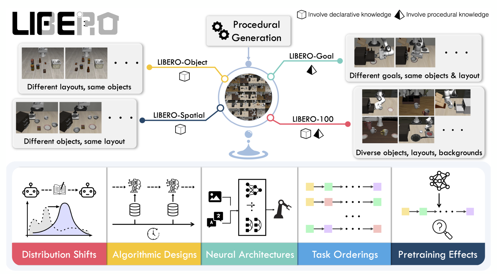
7. RoboTwin 2.0
슬라이드의 출처는 Chen et al., RoboTwin 2.0: A Scalable Data Generator and Benchmark with Strong Domain Randomization for Robust Bimanual Robotic Manipulation, arXiv 2025입니다.
LIBERO가 한 팔 로봇의 과제를 체계적으로 설계했다면, RoboTwin 2.0은 양팔(bimanual) 조작으로 범위를 넓힙니다. 두 팔을 함께 써야 하는 과제에서는 두 팔의 움직임을 서로 맞춰야 하므로, 행동 공간이 두 배로 커지는 것 이상으로 어려워집니다.
슬라이드가 전하는 숫자는 둘입니다.
- 50개의 양팔 과제: 과제의 종류로 다양성을 확보합니다.
- 5종의 로봇: 과제를 서로 다른 몸체로 수행하게 하여, 5절의 robosuite처럼 몸체의 다양성까지 시험합니다.
논문 제목의 나머지 표현이 이 벤치마크의 설계 방향을 알려 줍니다.
- 확장 가능한 데이터 생성기(scalable data generator): 벤치마크이면서 동시에 학습용 데이터를 대량으로 만들어 내는 도구입니다. VLA처럼 많은 데이터를 요구하는 모형에게는 평가 과제만큼이나 학습 데이터가 중요하기 때문입니다.
- 강한 도메인 무작위화(strong domain randomization) → 강건한(robust) 조작: 장면의 겉모습을 크게 무작위화해 가며 학습시켜, 정책이 특정 겉모습에 과적합하지 않게 합니다.
시뮬레이션에서 학습한 정책은 시뮬레이터 특유의 겉모습(질감, 조명, 색, 배경, 물체 배치)에 과적합하기 쉽습니다. 도메인 무작위화(domain randomization)는 이런 요소를 에피소드마다 무작위로 바꿔, 정책이 바뀌어도 되는 것에 의존하지 않고 바뀌지 않는 과제의 본질에 의존하도록 만드는 기법입니다. 무작위화의 폭이 충분히 넓으면 실제 세계도 그 분포 안의 한 표본처럼 보이게 된다는 것이 기본 발상이며, 5절 DoorGym의 외형 변이도 같은 계열의 아이디어입니다.
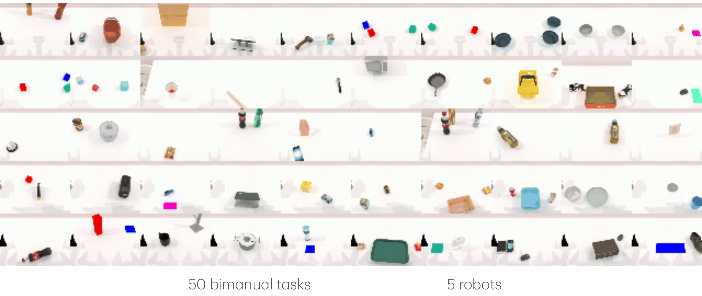
8. SIMPLER
슬라이드의 출처는 Li*, Hsu*, Gu* et al., Evaluating Real-World Robot Manipulation Policies in Simulation, CoRL 2024입니다.
9쪽에는 제목이 없고 논문의 대표 이미지 한 장만 실려 있습니다. 그 위에 얹힌 문장 “SIMPLER enables effortless and reproducible eval at scale.”이 이 슬라이드의 전부이자 요점입니다.
8.1 실세계 평가는 왜 어려운가
범용 로봇 정책은 결국 실세계에서 쓰기 위한 것이므로 실세계에서 평가하는 것이 원칙입니다. 그러나 실세계 평가에는 비용이 따릅니다.
- 수고: 에피소드마다 사람이 장면을 원래대로 되돌려 놓아야 하고, 로봇을 계속 지켜봐야 합니다.
- 재현성: 연구실마다 방, 조명, 물체가 달라 같은 정책을 평가해도 결과가 달라집니다. 다른 연구실의 숫자를 그대로 비교하기 어렵습니다.
- 규모: 위 두 문제 때문에 많은 정책을 많은 과제에서 여러 번 돌려 보기 어렵습니다.
8.2 SIMPLER의 답
논문 제목이 답을 요약합니다 — 실세계용 로봇 조작 정책을 시뮬레이션에서 평가합니다. 실세계에서 쓰려고 학습한 정책을 시뮬레이션 속 장면에 넣어 돌리면, 앞의 세 문제가 그대로 이미지 속 문장의 세 수식어로 바뀝니다.
| 실세계 평가의 문제 | SIMPLER가 주는 것 |
|---|---|
| 사람이 장면을 되돌리고 지켜봐야 한다 | 수고 없는(effortless) 평가 |
| 연구실마다 조건이 달라 결과가 흔들린다 | 재현 가능한(reproducible) 평가 |
| 많이 돌려 보기 어렵다 | 대규모(at scale) 평가 |
시뮬레이션 평가는 시뮬레이션에서의 순위가 실세계에서의 순위와 일치할 때에만 쓸모가 있습니다. 시뮬레이션에서 1등인 정책이 실세계에서 꼴찌라면 아무리 싸고 재현 가능해도 소용이 없습니다. 시뮬레이터가 만든 장면과 실제 장면 사이의 차이(sim-to-real gap)가 크면 이 일치가 깨지므로, 이런 방식의 평가는 실세계를 얼마나 충실히 흉내 내느냐에 성패가 달려 있습니다.
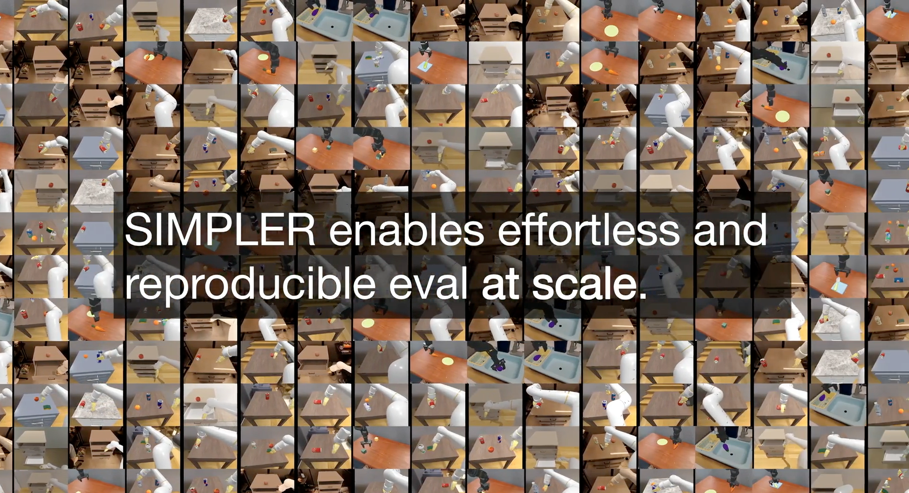
9. RoboArena: VLA 경연 (RoboArena: VLA Competition)
슬라이드의 출처는 Atreya*, Pertsch*, Lee* et al., RoboArena: Distributed Real-World Evaluation of Generalist Robot Policies, CoRL 2025입니다.
SIMPLER가 평가를 시뮬레이션으로 옮겼다면, RoboArena는 정반대로 실세계에 남되 평가를 전 세계로 분산시킵니다.
9.1 구조: 정책 풀 → 분산 평가자 → 순위
그림을 왼쪽에서 오른쪽으로 읽으면 세 단계입니다.
- 범용 정책 풀(Generalist Policy Pool): 평가받을 정책 \(\pi_1, \pi_2, \ldots\)이 모여 있습니다.
- 분산된 평가자 네트워크(Distributed Network of Evaluators): 여러 곳의 평가자가 각자 고른 아무 장면과 과제에서 두 정책을 맞붙이는 A/B 비교를 합니다. 예를 들어 한 평가자는 “Close the drawer”를 지시해 \(\pi_4 > \pi_1\)이라는 결과를, 다른 평가자는 “Pour the water into the bowl”을 지시해 \(\pi_4 > \pi_7\)이라는 결과를 얻습니다.
- 집계(Aggregate pairwise policy preferences): 이렇게 모인 쌍대 선호(pairwise preference)를 하나로 모아 정책 순위(Policy Ranking)와 점수를 만듭니다.
그림에 적힌 규모는 2주 동안 선호가 매겨진 롤아웃 4천 개 이상입니다.
9.2 왜 성공률이 아니라 쌍대 비교인가
평가자마다 장면과 과제를 자유롭게 고르면, 어떤 평가자는 쉬운 과제를, 어떤 평가자는 어려운 과제를 냅니다. 이때 각자 잰 성공률을 모으면 정책의 실력과 과제의 난이도가 뒤섞여 버립니다. 반면 같은 장면, 같은 지시에서 두 정책을 비교하면 난이도는 두 정책에게 똑같이 작용하므로, 결과는 두 정책의 상대적인 실력만 반영합니다. 통계에서 짝을 지어 비교하는 설계가 개체 간 차이를 상쇄하는 것과 같은 원리입니다.
이 덕분에 평가 조건을 표준화하지 않고도 비교가 공정해지고, 표준화할 필요가 없으니 한 연구실이 갖출 수 없는 다양한 실제 환경을 평가에 끌어들일 수 있습니다. 분산이 약점이 아니라 강점이 되는 설계입니다.
슬라이드는 쌍대 선호를 어떤 방식으로 집계하는지까지는 밝히지 않지만, 이런 집계의 표준적인 도구를 알아 두면 순위표의 점수를 읽기 쉽습니다. Bradley–Terry 모형은 각 정책 \(\pi_i\)에 잠재적인 실력 점수 \(s_i\)가 있다고 가정하고, \(\pi_i\)가 \(\pi_j\)를 이길 확률을 두 점수의 차이만으로 정합니다.
\[ P(\pi_i \succ \pi_j) = \frac{e^{s_i}}{e^{s_i} + e^{s_j}} = \sigma(s_i - s_j), \qquad \sigma(x) = \frac{1}{1 + e^{-x}} \]
가운데 등호는 분자와 분모를 \(e^{s_i}\)로 나누면 \(\frac{1}{1 + e^{-(s_i - s_j)}}\)이 되는 데서 나옵니다. \(\pi_i\)가 \(\pi_j\)를 이긴 비교 \((i, j)\)들의 모음을 \(\mathcal{D}\)라 하고 각 비교가 서로 독립이라고 두면, 가능도는 비교마다의 확률의 곱이고 그 로그는
\[ \log L(\mathbf{s}) = \sum_{(i, j) \in \mathcal{D}} \log \sigma(s_i - s_j) \]
이므로, 이를 최대화하는 \(\mathbf{s}\)가 점수의 추정값입니다. 확률이 차이 \(s_i - s_j\)에만 의존하므로 모든 점수에 같은 상수를 더해도 가능도는 변하지 않으며, 그래서 점수는 기준점을 하나 정해야 절대값이 정해집니다. 체스의 Elo 점수도 같은 계열의 모형입니다.
이 틀에서는 \(s_i < s_j\)라도 \(\sigma(s_i - s_j) > 0\)이므로, 점수가 낮은 쪽이 이기는 이변이 일정한 확률로 일어납니다. 그림에서 “Pick up the orange”를 두고 \(\pi_3\)가 \(\pi_9\)를 이겼는데도 순위표에서는 \(\pi_9\)(965)가 \(\pi_3\)(855)보다 위에 있는 것이 그런 예이며, 순위는 개별 대결 하나가 아니라 수많은 대결의 집계로 정해집니다.
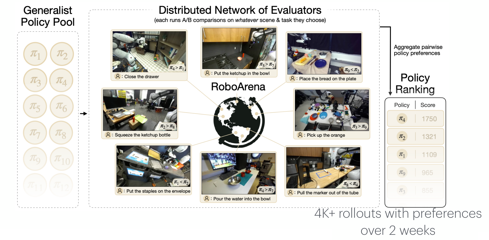
10. FurnitureBench
슬라이드의 출처는 Heo* and Lee* et al., FurnitureBench: Reproducible Real-World Benchmark for Long-Horizon Complex Manipulation, RSS 2023이며, 프로젝트 페이지는 clvrai.com/furniture-bench입니다.
SIMPLER가 실세계를 시뮬레이션으로 옮기고 RoboArena가 실세계의 다양성을 끌어안았다면, FurnitureBench는 세 번째 길을 택합니다 — 실세계 환경 자체를 누구나 똑같이 다시 만들 수 있도록 표준화합니다. 슬라이드는 그 두 기둥을 좌우에 나눠 보여 줍니다.
10.1 재현 가능한 환경 (Reproducible Environment)
- 3D 프린터로 출력한 가구 부품: 부품을 3D 프린터로 출력하므로 어느 연구실이든 같은 부품을 만들 수 있습니다. 부품마다 흑백 사각형 표식이 붙어 있어, 카메라로 부품의 위치와 방향을 알아낼 수 있게 되어 있습니다.
- 시판 장비: 작업대는 IKEA TOMMARYD 탁자, 로봇 팔은 Franka Panda, 카메라는 Intel RealSense입니다. 모두 살 수 있는 제품이므로 하드웨어 구성도 그대로 복제됩니다.
8절에서 본 실세계 평가의 가장 큰 약점이 재현성이었다는 점을 떠올리면, 이 구성은 그 약점을 하드웨어 수준에서 정면으로 푸는 방식입니다.
10.2 장기·복합 조작 (Long-horizon Complex Manipulation)
오른쪽의 여덟 칸은 흩어진 부품에서 시작해 완성된 의자에 이르는 조립 과정입니다. 부품을 집고, 정확한 위치에 끼우고, 방향을 바꿔 다음 부품을 맞추는 단계가 길게 이어집니다.
장기(long-horizon): 한 단계를 성공해야 다음 단계가 가능하므로, 어느 한 단계의 실패가 과제 전체의 실패로 이어집니다. 단계별 성공률을 \(p\), 단계 수를 \(n\)이라 하고 단계들의 성공이 서로 독립이라고 단순화하면 전체 성공률은
\[ P(\text{전체 성공}) = \prod_{k=1}^{n} p = p^{n} \]
으로 단계 수에 대해 지수적으로 떨어집니다. 가령 \(p = 0.9\)라도 \(n = 10\)이면 \(0.9^{10} \approx 0.35\)입니다.
복합(complex): 끼워 맞추기처럼 정밀한 접촉이 필요한 동작이 섞여 있어, 한 단계 한 단계도 쉽지 않습니다.
2절의 주석이 FurnitureBench를 FrankaKitchen과 함께 “장기 로봇 과제”로 묶은 이유가 여기에 있습니다.
8–10절의 세 벤치마크는 “실세계 로봇 정책을 어떻게 믿을 만하게 평가할 것인가”라는 같은 질문에 서로 다른 답을 냅니다.
| 벤치마크 | 평가 장소 | 비교를 공정하게 만드는 장치 |
|---|---|---|
| SIMPLER | 실세계를 흉내 낸 시뮬레이션 | 누구나 같은 가상 장면을 돌린다 |
| RoboArena | 전 세계의 서로 다른 실세계 | 같은 장면 안에서 두 정책을 맞붙인다 |
| FurnitureBench | 표준화된 실세계 | 누구나 같은 부품과 장비를 갖춘다 |
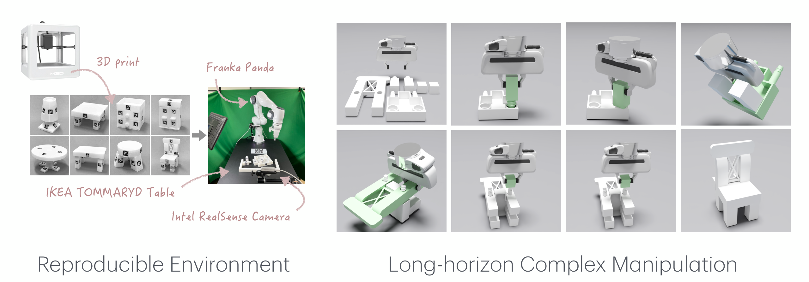
11. HumanoidBench
슬라이드의 출처는 Sferrazza et al., HumanoidBench: Simulated Humanoid Benchmark for Whole-Body Locomotion and Manipulation, RSS 2024이며, 프로젝트 페이지는 humanoid-bench.github.io입니다.
마지막 벤치마크는 2절에서 “복잡한 로봇 시스템”이라는 주석이 붙었던 HumanoidBench입니다. 이름대로 휴머노이드(인간형 로봇)를 시뮬레이션에서 다루는 벤치마크이며, 등장하는 로봇은 가슴에 적힌 대로 Unitree H1입니다.
11.1 왜 휴머노이드가 “복잡한 시스템”인가
3절의 과제들과 비교하면 차이가 분명합니다.
- 몸의 규모: 두 다리와 두 팔, 그리고 손가락까지 갖춘 몸은 관절 수가 훨씬 많아, 행동 벡터 \(\mathbf{a} \in \mathbb{R}^{d}\)의 차원 \(d\)가 3절의 막대 모양 보행체와는 비교가 안 되게 커집니다.
- 전신(whole-body)의 결합: 두 발로 서 있는 것만으로도 매 순간 균형을 잡아야 하는데, 그 상태에서 손으로 물체까지 다뤄야 합니다. 다리의 움직임이 손끝을 흔들고 손의 움직임이 무게중심을 옮기므로, 이동과 조작을 따로 떼어 풀 수 없습니다.
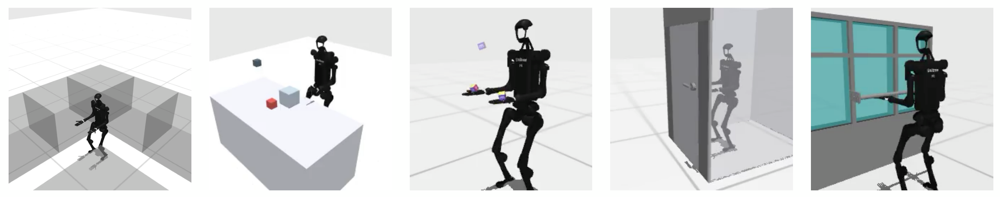
11.2 과제 구성
12쪽의 대표 장면 다섯 개에 이어, 13쪽은 과제 18개를 이름과 함께 나열합니다. 이름과 장면으로 보면 크게 세 부류가 섞여 있습니다.
| 부류 | 과제 |
|---|---|
| 이동(locomotion) 중심 | walk, stairs, slide, hurdle, maze |
| 조작(manipulation) 중심 | push, cube, stir, basketball, bookshelf, cabinet, window, kitchen, truck, clean |
| 전신의 균형과 힘 | balance, highbar, powerlifting |
원 논문 제목의 “전신 이동과 조작”이 이 부류들을 함께 가리키며, 하나의 몸과 하나의 행동 공간으로 이 모두를 해내야 한다는 점이 이 벤치마크를 가장 복잡한 시험대로 만듭니다.
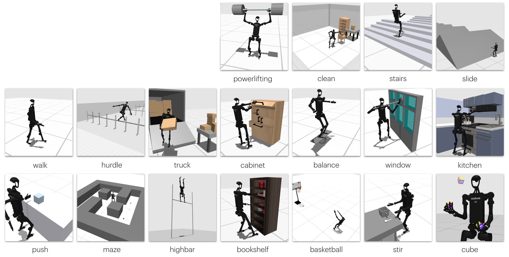
정리하며 (Closing Remarks)
이번 강의의 논리 사슬을 한 장으로 요약하면 다음과 같습니다.
| 단계 | 내용 | 근거 |
|---|---|---|
| ① 문제 | 강화학습에는 고정된 시험 점수가 없으므로, 학습 스텝에 따른 평가 반환값의 곡선 \(\bar{R}(t)\)로 알고리즘을 비교한다 | 1절 |
| ② 두 잣대 | 곡선의 끝 높이 \(\bar{R}(\infty)\)가 점근 성능, 같은 성능에 도달하는 데 드는 스텝 \(t^\star(\tau)\)가 표본 효율이며, 곡선이 교차하면 두 잣대는 서로 다른 답을 낸다 | 1절 |
| ③ 지도 | 벤치마크는 행동 공간(연속·이산)으로 먼저 갈리고, 다양성·장기성·복잡도·일반화·희소 보상·열린 결말 같은 시험 항목으로 다시 갈린다 | 2절 |
| ④ 연속 표준 | MuJoCo 기반 DMC·gym의 약 20개 과제가 상태 관측(100K·1M)과 픽셀 관측(\(84 \times 84 \times 3\), 1M)의 두 설정으로 PPO·SAC·DDPG·TD3·DreamerV3를 잰다 | 3절 |
| ⑤ 이산 표준 | 아타리 55개 게임·약 18개 행동에서 RAM(128)과 이미지 관측을 쓰며, Atari200M은 점근 성능을, Atari100K는 표본 효율을 잰다 | 4절 |
| ⑥ 조작으로 | 로봇 조작 벤치마크들은 과제의 수·외형 변이·몸체의 종류로 다양성을 늘리고, Meta-World는 훈련 45개·시험 5개로 과제를 나눠 일반화를 잰다 | 5절 |
| ⑦ 지식의 전이 | LIBERO는 절차적 생성으로 한 번에 한 요인만 바꾼 네 과제 묶음을 만들어 선언적·절차적 지식의 전이를 분리해 시험한다 | 6절 |
| ⑧ 대량 생성 | RoboTwin 2.0은 강한 도메인 무작위화를 갖춘 데이터 생성기로 50개 양팔 과제와 5종 로봇을 제공한다 | 7절 |
| ⑨ 평가 비용 | 실세계 평가는 수고롭고 재현이 어렵고 규모를 키우기 힘들며, SIMPLER는 실세계용 정책을 시뮬레이션에서 평가해 이를 푼다 — 단, 시뮬레이션의 순위가 실세계와 일치해야 한다 | 8절 |
| ⑩ 분산 비교 | RoboArena는 평가자가 고른 장면에서의 A/B 쌍대 선호를 모아 순위를 매기므로 조건을 표준화하지 않고도 공정하다 (2주, 4천 개 이상의 롤아웃) | 9절 |
| ⑪ 표준화 | FurnitureBench는 3D 출력 부품과 시판 장비로 실세계 환경을 재현 가능하게 만들고, 단계가 길게 이어지는 가구 조립으로 장기·복합 조작을 시험한다 | 10절 |
| ⑫ 복잡한 몸 | HumanoidBench는 휴머노이드 하나로 이동·조작·전신 균형이 섞인 과제 18개를 풀게 해 가장 복잡한 로봇 시스템을 시험한다 | 11절 |